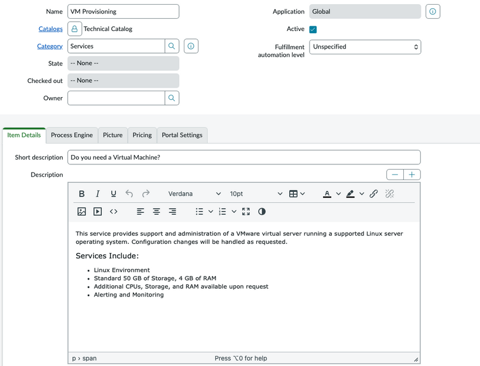
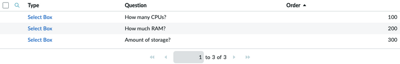
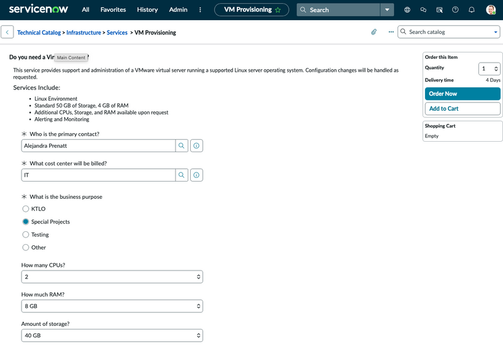
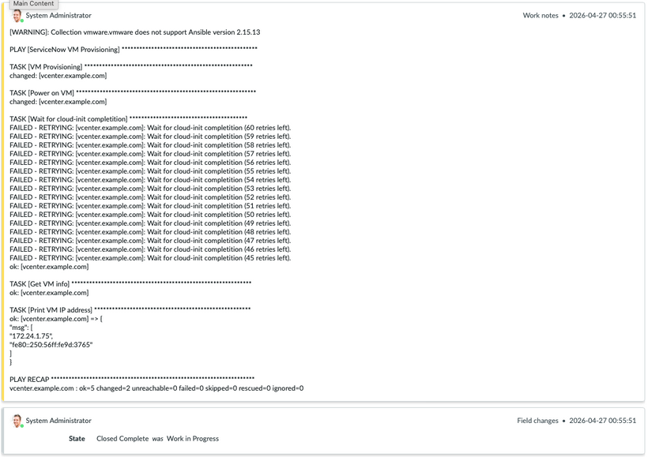
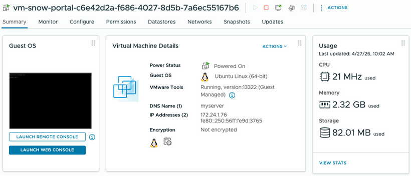

Automated VM Provisioning from a ServiceNow Ticket¶
This is the second practical example in our series on automating managed service operations. Here we see how to provision a virtual machine automatically, starting from a ticket opened in ServiceNow.
Workflow Analysis¶
This example is intentionally simplified, but real implementations require a thorough analysis of the provisioning workflow. Details that look trivial at first glance can introduce complex edge cases and exception handling if they are left unaddressed.
Provisioning a VM with a remotely accessible operating system involves:
- Identifying the target vCenter, datacenter, cluster and datastore.
- Providing either an unattended installation ISO or a template that regenerates the host identifiers on first boot.
- Defining the hostname, domain and fully qualified domain name (FQDN).
- Allocating a free IP address, the default gateway and the network name as defined in vCenter.
- Configuring DNS and NTP servers.
- Registering the FQDN-to-IP mapping in DNS.
- Storing the access credentials securely in a password manager.
The result is a VM that is remotely accessible, with the connection details delivered to the end user.
If we also want a service catalog that lets users select additional software at provisioning time, it is worth defining a controlled set of options upfront. To minimize variability and complexity, I recommend mapping each option to a dedicated Ansible playbook that configures the freshly installed system. For example, we can define a role variable that accepts the following values:
undefined: no post-installation customization.tomcat: installs Apache + Tomcat.www: installs Apache + PHP and pulls the website codebase from a Git repository.
ServiceNow Service Catalog¶
On the development instance, a Technical Catalog should already be present under Service Catalog → Catalog Definitions → Maintain Catalogs, and within it a catalog item named VM Provisioning.

The catalog item exposes three input variables to the end user.

Serving Tickets¶
We reuse the Python polling script introduced in the previous article (available in the GitHub repository). Following the same pattern, the script retrieves the values of the RITM, normalizes them and passes them as parameters to the Ansible playbook.
# Mark ticket as WIP
update_ritm(sys_id, "work_in_progress")
# Run Ansible
print(variables)
storage=variables.get("storage")
storage=storage.replace(" GB", "")
storage=storage.replace(" TB", "000")
storage=int(storage)
result = run_ansible_vm(cpu=variables.get("cpu"), ram=variables.get("ram"), storage=storage)
rc = result.rc
stdout = result.stdout.read()
stderr = result.stderr.read()
if rc == 0:
update_ritm(sys_id, "closed_complete", stdout)
else:
update_ritm(sys_id, "closed_incomplete", stdout + "\n" * 3 + stderr)
The playbook is then executed with the sanitized and normalized input parameters. In this simplified example, the hostname is set only at the VM level, using a UUID to guarantee a unique name.
def run_ansible_vm(cpu, ram, storage):
"""Run Ansible."""
extravars = {
'vm_name': f'vm-snow-portal-{str(uuid.uuid4())}',
'vm_ram': int(ram) * 1024,
'vm_cpu': int(cpu),
'vm_storage': storage,
}
print("Running Ansible playbook with", extravars)
run = ansible_runner.run(
private_data_dir='.',
playbook=f'playbook-snow_vm.yml',
extravars=extravars,
envvars={
"ANSIBLE_FORCE_COLOR": "false",
"NO_COLOR": "1",
}
)
return run
Building an Unattended Installation Image¶
This example focuses on Ubuntu Linux, but the same approach applies to any operating system we choose to support.
Ubuntu uses cloud-init to standardize and reproduce system installations. Let's prepare a fully unattended Ubuntu ISO.
First, download the base ISO:
Extract its contents into a working directory:
Next, create the cloud-init configuration directory and files:
iso_extracted/nocloud/meta-data: leave empty.iso_extracted/nocloud/vendor-data: leave empty.iso_extracted/nocloud/user-data: contains the cloud-init parameters.
#cloud-config
autoinstall:
version: 1
identity:
hostname: myserver
username: ubuntu
# echo password | mkpasswd -m sha-512 -s
password: "$6$Lyb2/s0n8bZA1Orw$2v/JLCxyoX4uTvkbBFPzijfaLTJ1J6q56VPFoFsZHH2sD48.6TZRqyyePTTZz3NMjzlg5qxrHlTqV7cL9Vzge/"
storage:
layout:
name: direct
late-commands:
- shutdown -r now
The user-data file contains the cloud-init configuration. In this example, it:
- Sets a temporary hostname.
- Creates an initial user account with a password.
- Triggers a reboot when the installation completes.
Update the GRUB configuration (iso_extracted/boot/grub/grub.cfg) so that it points to the cloud-init files. Be sure to escape the ; character where required.
menuentry "Try or Install Ubuntu Server" {
set gfxpayload=keep
linux /casper/vmlinuz autoinstall ds=nocloud\;s=/cdrom/nocloud/
initrd /casper/initrd
}
Finally, repackage the directory into a new bootable ISO:
xorriso -as mkisofs -r -V 'Ubuntu-Server 26.04 amd64' --grub2-mbr --interval:local_fs:0s-15s:zero_mbrpt,zero_gpt:'ubuntu-26.04-live-server-amd64.iso' --protective-msdos-label -partition_cyl_align off -partition_offset 16 --mbr-force-bootable -append_partition 2 28732ac11ff8d211ba4b00a0c93ec93b --interval:local_fs:5689428d-5699723d::'ubuntu-26.04-live-server-amd64.iso' -appended_part_as_gpt -iso_mbr_part_type a2a0d0ebe5b9334487c068b6b72699c7 -c '/boot.catalog' -b '/boot/grub/i386-pc/eltorito.img' -no-emul-boot -boot-load-size 4 -boot-info-table --grub2-boot-info -eltorito-alt-boot -e '--interval:appended_partition_2_start_1422357s_size_10296d:all::' -no-emul-boot -boot-load-size 10296 -o ubuntu-26.04-server-amd64-autoinstall.iso iso_extracted/
All the configuration files are available in the GitHub repository.
Note on VM templates: if we prefer to clone from a template instead of booting from an ISO, we must make sure that the provisioning process regenerates all the unique identifiers, in particular the SSH host keys and the machine ID, before the VM is handed over.
Ansible Playbook and Configuration¶
Start by adding the vCenter to the Ansible inventory.
[vcenter]
vcenter.example.com
[vcenter:vars]
vm_datacenter="Datacenter"
vm_cluster="Cluster"
vm_datastore="172.25.10.11-SSD"
vm_network="LAB_EVENG"
ansible_user="administrator@vsphere.local"
ansible_password="password"
ansible_connection="local"
ansible_python_interpreter="venv/bin/python3"
The playbook performs three main tasks:
- Create the VM, using a module of the official
vmware.vmwarecollection. - Power on the VM and boot from the ISO, using the same collection.
- Wait for the installation to complete, using a module of the
community.vmwarecollection that can run commands through VMware Tools.
tasks:
- name: VM Provisioning
vmware.vmware.vm:
<<: *vcenter_auth
name: "{{ vm_name }}"
datacenter: "{{ vm_datacenter }}"
cluster: "{{ vm_cluster }}"
datastore: "{{ vm_datastore }}"
guest_id: amazonlinux3_64Guest
cpu: …
memory: …
disks: …
scsi_controllers: …
sata_controllers: …
cdroms: …
network_adapters: …
register: vm
- name: Power on VM
vmware.vmware.vm_powerstate:
<<: *vcenter_auth
moid: "{{ vm.vm.moid }}"
datacenter: DC01
state: powered-on
For the third step, the playbook:
- Polls for the file
/var/lib/cloud/instance/boot-finished, which cloud-init creates once the installation is complete. - Retrieves the assigned IP addresses and prints them to stdout, so that they can be attached to the originating ServiceNow ticket.
tasks:
- name: Power on VM
vmware.vmware.vm_powerstate:
<<: *vcenter_auth
moid: "{{ vm.vm.moid }}"
datacenter: DC01
state: powered-on
- name: Wait for cloud-init completion
community.vmware.vmware_vm_shell:
<<: *vcenter_auth
datacenter: "{{ vm_datacenter }}"
vm_id: "{{ vm_name }}"
vm_username: "ubuntu"
vm_password: "password"
vm_shell: /usr/bin/test
vm_shell_args: "-f /var/lib/cloud/instance/boot-finished"
wait_for_process: true
register: cloud_init_result
until: cloud_init_result.exit_code is defined and cloud_init_result.exit_code == 0
retries: 60
delay: 15
changed_when: false
- name: Get VM info
community.vmware.vmware_guest_info:
<<: *vcenter_auth
datacenter: "{{ vm_datacenter }}"
moid: "{{ vm.vm.moid }}"
register: vm_info
- name: Print VM IP address
debug:
msg: "{{ vm_info.instance.hw_eth0.ipaddresses }}"
End-to-End Execution Example¶
The user submits a VM request by filling out the service catalog form with the required parameters.

The polling script automatically picks up the open ticket and triggers the execution. When the Ansible playbook completes, the result, including the IP address of the VM, is posted back to the user as a comment on the ServiceNow ticket.

In vCenter, the new VM appears in the inventory, powered on and ready.

The full script is available in the GitHub repository.